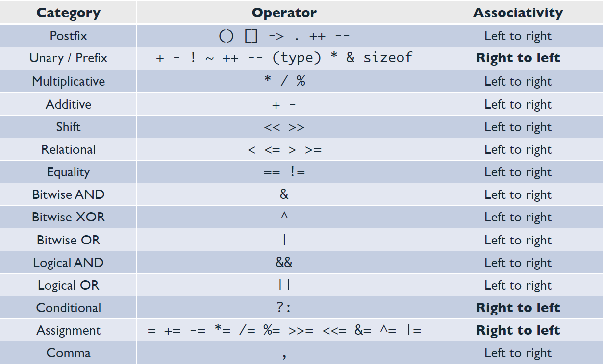

Strutture di controllo e tipi di base
![]()
13 marzo 2025
Tenendo a mente l’architettura di Von Neumann per i calcolatori, si può riassumere che i computer hanno bisogno di 2 principali elementi: dati e istruzioni per manipolare i dati. I linguaggi di programmazione forniscono in maniera trasparente queste componenti attraverso l’uso di variabili ed espressioni.
Le espressioni sono un insieme di:
- variabili,
- costanti,
- operatori.
Tipi di base
Tipi di dato
Le varibili possono contenere diversi tipi di dati, i tipi di dati base in C sono:
- interi: int, short, long int, unsigned short/int/long int
- virgola mobile: float, double, long double
- char: caratteri
Inoltre esiste il tipo speciale void che indica l’assenza di informazione.
Tipi numerici
I vari tipi di interi e tipi di virgola mobile si distinguono per il numero di byte usati per la loro rappresentazione in memoria e, conseguentemente, per il range di valori che possono rappresentare.
Nota
Il numero di byte usati per rappresentare un tipo di dato dipende dal compilatore e dall’architettura del computer. Per sapere quanti byte vengono usati per rappresentare un tipo di dato si può usare l’operatore sizeof.
Per conoscere il range di valori che può rappresentare un tipo di dato si può usare la libreria limits.h per i tipi interi e float.h per i tipi di virgola mobile.
Tipi numerici
#include <limits.h>
#include <stdio.h>
int main(void)
{
printf("size of short: %lu\n", sizeof(short));
printf("size of int: %lu\n", sizeof(int));
printf("size of double: %lu\n", sizeof(double));
printf("INT_MAX = %d\n", INT_MAX);
printf("INT_MIN = %d\n", INT_MIN);
printf("UINT_MAX = %u\n", UINT_MAX);
printf("LONG_MAX = %ld\n", LONG_MAX);
printf("LONG_MIN = %ld\n", LONG_MIN);
printf("ULONG_MAX = %lu\n", ULONG_MAX);
printf("SHRT_MAX = %d\n", SHRT_MAX);
printf("SHRT_MIN = %d\n", SHRT_MIN);
printf("USHRT_MAX = %u\n", USHRT_MAX);
}
Tipi char
Il tipo char è usato per rappresentare un singolo carattere. In C i caratteri sono rappresentati come interi senza segno di 8 bit.
I char vanno sempre scritti tra apici singoli, scrivendo un solo carattere. Il C lin interpreterà come un intero.
Conversioni tra tipi
- In generale, per effettuare operazioni aritmetiche tra due numeri, questi devono essere dello stesso tipo.
- In C è possibile mescolare tipi diversi nella stessa espressione, il compilatore effettuerà automaticamente le conversioni necessarie:
In questo esempio, il valore intero a viene convertito implicitamente in virgola mobile prima di eseguire l’operazione di somma. Questo tipo di conversione è chiamato “promotion”.
Conversioni implicite
Se assegno un valore a una variabile di tipo diverso, il compilatore effettuerà una conversione implicita.
È vero quindi anche il contrario:
Cast espliciti
È possibile convertire esplicitamente il tipo di un’ espressione con l’operazione di casting:
(nome_tipo) espressione
Il risultato dell’espressione viene convertito al tipo specificato.
Un caso frequente è quando si esegue una divisione tra due interi:
Operatori
Operatori
Esistono molteplici operatori, ognuno ha varie caratteristiche:
- precedenza: ordine in cui vengono analizzati gli operatori
- associatività: se ci sono più operatori uguali (o di uguale precedenza)
- side-effects, se presenti (cioè le variabili coinvolte vengono cambiate o no)
Operatori
Gli operatori più in alto hanno priorità più alta:
Quiz!
Indovina l’output del seguente codice:
Operatori
i++ è il post-incremento, ++i è il pre-incremento
i = 1;
printf("i is %d\n", i++); /* i is 1 */
printf("i is %d\n", i); /* i is 2 */
printf("i is %d\n", ++i); /* i is 3 */
printf("i is %d\n", i); /* i is 3 */Da grandi poteri derivano grandi bugs…
Gli operatori di post/pre-incremento sono molto utili e vengono usati spesso, vanno però usati con attenzione. Nella maggior parte delle situazioni è bene usare queste operazioni atomicamente (da sole in una riga).
Espressioni logiche
Espressioni logiche
Alcuni operatori ci dicono se una certa espressione è “vera” o “falsa”, ad esempio:
i < j && j < k ci dice se \(i\) è minore sia di \(j\) che di \(k\)
Nota
\(i < j < k\) si può scrivere ma non fa quello che sembra, in realtà: (i < j) < k è vero con int i=3, j=2, k=1.
bool
Il tipo di ritorno di queste espressioni in C è un intero, il tipo booleano non esiste in C (in C99 si è provato a sistemare).
- \(0 \rightarrow\) falso
- \(1 \rightarrow\) vero (e tutti gli interi diversi da \(0\))
Espressioni logiche
Gli operatori booleani producono tutti 0 oppure 1 come risultato, ma bisogna ricordare che qualunque valore diverso da 0 è considerato vero.
L’espressione (5 && 1) viene valutata come vera in quanto entrambi i valori sono diversi da 0
Espressioni logiche
- !expr restituisce 1 se expr è 0
- expr1 && expr2 restituisce 1 se entrambe le espressioni sono non-zero
- expr1 || expr2 restituisce 1 se almeno una delle due espressioni è non-zero
Nota
Sia && che || sono operatori a corto circuito, cioè se il risultato è già noto dopo aver valutato la prima espressione, la seconda non viene valutata.
Quiz!
Qual è il valore di verità delle seguenti espressioni?
!01 && 21 || 01 > 0'a' > 'b''Z' > 'a'':' < ';'
Control flow
Control flow
Essendo C un linguaggio strutturato, possiede un insieme di istruzioni di controllo del flusso di esecuzione del programma. Le principali istruzioni di controllo del flusso sono:
if-elseswitchfor
whiledo-whilebreakcontinue
if-else
L’istruzione if-else permette di eseguire un blocco di codice solo se una condizione è vera. La sintassi è la seguente:
if-else annidati
Oppure si può usare l’istruzione else if per evitare annidamenti.
#include <stdio.h>
int main(void)
{
int x = 10;
if (x > 7)
{
printf("x è maggiore di 7\n");
}
else if (x > 5)
{
printf("x è maggiore di 5\n");
}
else
{
printf("x è minore o uguale a 5\n");
}
}
Attenzione
Un errore comune è confondere l’operatore di assegnamento = con l’operatore di confronto ==. Ad esempio, l’espressione x = 10 assegna il valore 10 alla variabile x, mentre l’espressione x == 10 confronta il valore della variabile x con 10. Se si scrive if (x = 10), l’espressione è sempre vera, perché assegna 10 alla variabile x e restituisce 10, che è considerato true. Per confrontare il valore della variabile x con 10, si deve invece scrivere if (x == 10).
If ternario
L’if ternario è una forma compatta dell’istruzione if-else. La sintassi è la seguente:
Se l’espressione è vera, viene restituito valore_se_vera, altrimenti viene restituito valore_se_falsa.
If ternario
Questo modo di scrivere l’istruzione if-else è utile quando si vuole assegnare un valore a una variabile in base a una condizione con una sola riga di codice. Se l’espressione è complessa, l’uso dell’if ternario può rendere il codice meno leggibile.
switch
Tanti if in cascata potrebbero essere sostituiti da uno switch. La sintassi è la seguente:
switch (espressione) {
case constant-expression:
// statements
break;
case constant-expression:
// statements
break;
// ...
default:
// statements
}Lo switch può essere utilizzato solo con espressioni di tipo intero (int, char, short, long, ecc.) e con espressioni di tipo enum (che verrà trattato in seguito).
Cicli
Caratteristica fondamentale di un linguaggio di programmazione sono i cicli. C implementa i classici for, while, ma anche do…while
while (expression) { statements }do { statements } while (expression)for (initialization; condition; increment) { statements }
Cicli
while e for sono equivalenti: tutto ciò che si può fare con un ciclo for si può fare con un ciclo while e viceversa. La scelta di quale istruzione utilizzare dipende dal contesto e dalla preferenza personale.
L’istruzione do-while è simile a while, ma la condizione viene valutata alla fine del blocco di codice. Questo significa che il blocco di codice viene eseguito almeno una volta, anche se la condizione è falsa.
Cicli
Dal C99 è possibile dichiarare variabili all’interno del ciclo for. Queste variabili sono visibili solo all’interno del ciclo. In C89 e nelle versioni precedenti, le variabili devono essere dichiarate all’inizio del blocco di codice.
Cicli infiniti
Un ciclo infinito è un ciclo che non termina mai. Può essere creato utilizzando un’istruzione while con una condizione sempre vera o for senza condizione, ad esempio while (1) oppure for (;;).
break e continue
- L’istruzione
breaktermina immediatamente il ciclo in cui si trova. - L’istruzione
continuetermina l’iterazione corrente del ciclo e passa alla successiva.
Avviso
È bene non abusare di break e continue, perché possono rendere il codice meno leggibile. In generale, è meglio evitare di utilizzare break e `continue all’interno di cicli annidati.
Esercizio: FizzBuzz
Scrivere un programma che stampi i numeri da 1 a 100, ma per i multipli di 3 stampi “Fizz” e per i multipli di 5 stampi “Buzz”. Per i numeri che sono sia multipli di 3 che di 5 stampi “FizzBuzz”.
Suggerimento
L’operatore modulo % restituisce il resto della divisione tra due numeri. Ad esempio, 5 % 3 restituisce 2, perché 5 diviso 3 dà 1 con un resto di 2.
Dati e Algoritmi